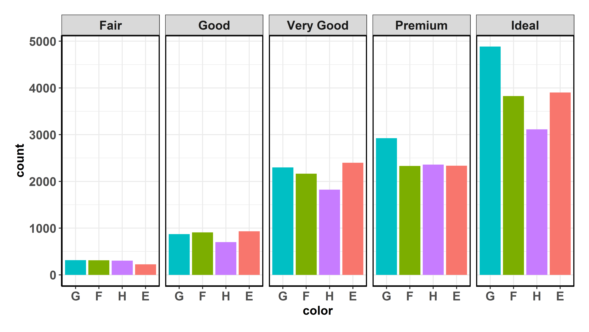

Overview
groupedstats package provides a collection of functions to run statistical operations on multiple variables across multiple grouping variables in a dataframe. This is a common situation, as illustrated by few example cases-
- If you have combined multiple studies in a single dataframe and want to run a common operation (e.g., linear regression) on each study. In this case, column corresponding to
studywill be the grouping variable. - If you have multiple groups in your dataframe (e.g., clinical disorder groups and controls group) and you want to carry out the same operation for each group (e.g., planned t-test to check for differences in reaction time in condition 1 versus condition 2 for both groups). In this case,
groupwill be the grouping variable. - If you have multiple conditions in a given study (e.g., six types of videos participants saw) and want to run a common operation between different measures of interest for each condition (e.g., correlation between subjective rating of emotional intensity and reaction time).
- Combination of all of the above.
Retirement
This package is no longer under active development and no new functionality will be added. The package will continue to be available on CRAN and all releases will primarily be focused on maintenance and bug fixes. This is for two reasons-
- There are more general versions of these functions introduced in
broomExtrapackage:grouped_tidy,grouped_augment,grouped_glance.
For more, see: https://indrajeetpatil.github.io/broomExtra/reference/index.html#section-grouped-variants-of-generics
-
dplyr 0.8.1introducedgroup_map(),group_modify()andgroup_walk()functions that can be used to iterate on grouped dataframes. So if you want to dogrouped_operations, I would highly recommend using these functions overgroupedstatsfunctions since the former are much more general, efficient, and faster than the latter.
For more, see: https://dplyr.tidyverse.org/reference/group_map.html
Installation
To get the latest, stable CRAN release (0.0.8):
You can get the development version of the package from GitHub (0.0.8.9000). To see what new changes (and bug fixes) have been made to the package since the last release on CRAN, you can check the detailed log of changes here: https://indrajeetpatil.github.io/groupedstats/news/index.html
If you are in hurry and want to reduce the time of installation, prefer-
# needed package to download from GitHub repo
utils::install.packages(pkgs = "remotes")
remotes::install_github(
repo = "IndrajeetPatil/groupedstats", # package path on GitHub
quick = TRUE
) # skips docs, demos, and vignettesIf time is not a constraint-
Citation
If you want to cite this package in a scientific journal or in any other context, run the following code in your R console:
Help
There is a dedicated website to groupedstats, which is updated after every new commit: https://indrajeetpatil.github.io/groupedstats/.
To see arguments for any of the functions, use args. For example-
args(groupedstats::grouped_ttest)
#> Registered S3 method overwritten by 'broom.mixed':
#> method from
#> tidy.gamlss broom
#> function (data, dep.vars, indep.vars, grouping.vars, paired = FALSE,
#> var.equal = FALSE)
#> NULLIn case you want to look at the function body for any of the functions, just type the name of the function without the parentheses:
If you are not familiar either with what the namespace :: does or how to use pipe operator %>%, something this package and its documentation relies a lot on, you can check out these links-
Usage
Below is a short introduction to the currently available functions in this package:
grouped_ versions of broom generic functions
These functions are re-exported from broomExtra package and provide the most general versions of grouped_ functions.
Here is an example
# for reproducibility
set.seed(123)
# running glm across two all combinations of two grouping variables
groupedstats::grouped_tidy(
data = groupedstats::Titanic_full, # dataframe
grouping.vars = c(Class, Age), # grouping variables
..f = stats::glm, # function to execute
# additional arguments passed to `..f`
formula = Survived ~ Sex,
family = stats::binomial(link = "logit")
)
#> # A tibble: 14 x 7
#> Class Age term estimate std.error statistic p.value
#> <fct> <fct> <chr> <dbl> <dbl> <dbl> <dbl>
#> 1 1st Adult (Intercept) 3.56e+ 0 0.507 7.01e+ 0 2.36e-12
#> 2 1st Adult SexMale -4.28e+ 0 0.532 -8.05e+ 0 8.36e-16
#> 3 1st Child (Intercept) -2.46e+ 1 131011. -1.88e- 4 10.00e- 1
#> 4 1st Child SexMale -1.74e-15 143515. -1.21e-20 1.00e+ 0
#> 5 2nd Adult (Intercept) 1.82e+ 0 0.299 6.08e+ 0 1.23e- 9
#> 6 2nd Adult SexMale -4.21e+ 0 0.409 -1.03e+ 1 6.79e-25
#> 7 2nd Child (Intercept) -2.56e+ 1 59908. -4.27e- 4 10.00e- 1
#> 8 2nd Child SexMale -7.14e-15 88489. -8.07e-20 1.00e+ 0
#> 9 3rd Adult (Intercept) -1.58e- 1 0.156 -1.01e+ 0 3.12e- 1
#> 10 3rd Adult SexMale -1.48e+ 0 0.201 -7.39e+ 0 1.51e-13
#> 11 3rd Child (Intercept) -1.94e- 1 0.361 -5.38e- 1 5.91e- 1
#> 12 3rd Child SexMale -7.96e- 1 0.486 -1.64e+ 0 1.01e- 1
#> 13 Crew Adult (Intercept) 1.90e+ 0 0.619 3.06e+ 0 2.18e- 3
#> 14 Crew Adult SexMale -3.15e+ 0 0.625 -5.04e+ 0 4.68e- 7For more examples, see: https://indrajeetpatil.github.io/broomExtra/reference/index.html#section-grouped-variants-of-generics
grouped_summary
Getting summary for multiple variables across multiple grouping variables. This function is a wrapper around skimr::skim_to_wide(). It is supposed to be a handy summarizing tool if you have multiple grouping variables and multiple variables for which summary statistics are to be computed-
# for reproducibility
set.seed(123)
library(datasets)
options(tibble.width = Inf) # show me all columns
groupedstats::grouped_summary(
data = iris,
grouping.vars = Species,
measures = Sepal.Length:Petal.Width,
measures.type = "numeric"
)
#> # A tibble: 12 x 16
#> Species type variable missing complete n mean sd min
#> <fct> <chr> <chr> <dbl> <dbl> <dbl> <dbl> <dbl> <dbl>
#> 1 setosa numeric Petal.Length 0 50 50 1.46 0.17 1
#> 2 setosa numeric Petal.Width 0 50 50 0.25 0.11 0.1
#> 3 setosa numeric Sepal.Length 0 50 50 5.01 0.35 4.3
#> 4 setosa numeric Sepal.Width 0 50 50 3.43 0.38 2.3
#> 5 versicolor numeric Petal.Length 0 50 50 4.26 0.47 3
#> 6 versicolor numeric Petal.Width 0 50 50 1.33 0.2 1
#> 7 versicolor numeric Sepal.Length 0 50 50 5.94 0.52 4.9
#> 8 versicolor numeric Sepal.Width 0 50 50 2.77 0.31 2
#> 9 virginica numeric Petal.Length 0 50 50 5.55 0.55 4.5
#> 10 virginica numeric Petal.Width 0 50 50 2.03 0.27 1.4
#> 11 virginica numeric Sepal.Length 0 50 50 6.59 0.64 4.9
#> 12 virginica numeric Sepal.Width 0 50 50 2.97 0.32 2.2
#> p25 median p75 max std.error mean.low.conf mean.high.conf
#> <dbl> <dbl> <dbl> <dbl> <dbl> <dbl> <dbl>
#> 1 1.4 1.5 1.58 1.9 0.0240 1.41 1.51
#> 2 0.2 0.2 0.3 0.6 0.0156 0.219 0.281
#> 3 4.8 5 5.2 5.8 0.0495 4.91 5.11
#> 4 3.2 3.4 3.68 4.4 0.0537 3.32 3.54
#> 5 4 4.35 4.6 5.1 0.0665 4.13 4.39
#> 6 1.2 1.3 1.5 1.8 0.0283 1.27 1.39
#> 7 5.6 5.9 6.3 7 0.0735 5.79 6.09
#> 8 2.52 2.8 3 3.4 0.0438 2.68 2.86
#> 9 5.1 5.55 5.88 6.9 0.0778 5.39 5.71
#> 10 1.8 2 2.3 2.5 0.0382 1.95 2.11
#> 11 6.23 6.5 6.9 7.9 0.0905 6.41 6.77
#> 12 2.8 3 3.18 3.8 0.0453 2.88 3.06This function can be used to get summary of either numeric or factor variables, but not both. This is by design. If no measures are specified, the function will compute summary for all variables of the specified type (numeric or factor).
If you want summary of variables of factor type-
# for reproducibility
set.seed(123)
library(ggplot2)
options(tibble.width = Inf) # show me all columns
groupedstats::grouped_summary(
data = ggplot2::diamonds,
grouping.vars = c(cut, clarity),
measures = color,
measures.type = "factor"
)
#> # A tibble: 40 x 10
#> cut clarity type variable missing complete n n_unique
#> <ord> <ord> <chr> <chr> <chr> <chr> <chr> <chr>
#> 1 Fair I1 factor color 0 210 210 7
#> 2 Fair SI2 factor color 0 466 466 7
#> 3 Fair SI1 factor color 0 408 408 7
#> 4 Fair VS2 factor color 0 261 261 7
#> 5 Fair VS1 factor color 0 170 170 7
#> 6 Fair VVS2 factor color 0 69 69 7
#> 7 Fair VVS1 factor color 0 17 17 7
#> 8 Fair IF factor color 0 9 9 3
#> 9 Good I1 factor color 0 96 96 7
#> 10 Good SI2 factor color 0 1081 1081 7
#> top_counts ordered
#> <chr> <chr>
#> 1 G: 53, H: 52, F: 35, I: 34 TRUE
#> 2 H: 91, F: 89, G: 80, E: 78 TRUE
#> 3 F: 83, H: 75, G: 69, E: 65 TRUE
#> 4 F: 53, G: 45, E: 42, H: 41 TRUE
#> 5 G: 45, F: 33, H: 32, I: 25 TRUE
#> 6 G: 17, E: 13, H: 11, F: 10 TRUE
#> 7 F: 5, D: 3, E: 3, G: 3 TRUE
#> 8 F: 4, D: 3, G: 2, E: 0 TRUE
#> 9 E: 23, F: 19, G: 19, H: 14 TRUE
#> 10 D: 223, E: 202, F: 201, G: 163 TRUE
#> # ... with 30 more rowsNote that there is a column corresponding to top_counts which is really useful in case you, let’s say, want to plot these counts. But this column is of character type and in wide format. The solution is to use an additional argument provided for this function:
# for reproducibility
set.seed(123)
library(ggplot2)
library(magrittr)
library(ggstatsplot)
#> Registered S3 methods overwritten by 'car':
#> method from
#> influence.merMod lme4
#> cooks.distance.influence.merMod lme4
#> dfbeta.influence.merMod lme4
#> dfbetas.influence.merMod lme4
options(tibble.width = Inf) # show me all columns
groupedstats::grouped_summary(
data = ggplot2::diamonds,
grouping.vars = cut, # for simplicity, let's just use one grouping variable
measures = color,
measures.type = "factor",
topcount.long = TRUE
) %>%
ggplot2::ggplot(
data = ., # placeholder for summary dataframe we just created
mapping = ggplot2::aes(
x = forcats::fct_inorder(f = factor.level),
y = count,
fill = factor.level
)
) +
ggplot2::geom_bar(stat = "identity") +
ggplot2::labs(x = "color", y = "count") +
ggplot2::facet_grid(facets = ~cut) + # for each level of the factor level
ggstatsplot::theme_ggstatsplot() +
ggplot2::theme(legend.position = "none")
This produces a long format table with two new columns factor.level and its corresponding count, which can then be immediately fed into other pipelines, e.g., preparing a plot of mean and sd values in ggplot2).
# for reproducibility
set.seed(123)
options(tibble.width = Inf) # show me all columns
groupedstats::grouped_summary(
data = ggplot2::diamonds,
grouping.vars = c(cut, clarity)
)
#> # A tibble: 280 x 17
#> cut clarity type variable missing complete n mean sd
#> <ord> <ord> <chr> <chr> <dbl> <dbl> <dbl> <dbl> <dbl>
#> 1 Fair I1 integer price 0 210 210 3704. 3099.
#> 2 Fair I1 numeric carat 0 210 210 1.36 0.75
#> 3 Fair I1 numeric depth 0 210 210 65.7 3.1
#> 4 Fair I1 numeric table 0 210 210 58.1 2.87
#> 5 Fair I1 numeric x 0 210 210 6.72 1.11
#> 6 Fair I1 numeric y 0 210 210 6.62 1.13
#> 7 Fair I1 numeric z 0 210 210 4.39 0.76
#> 8 Fair SI2 integer price 0 466 466 5174. 3928.
#> 9 Fair SI2 numeric carat 0 466 466 1.2 0.5
#> 10 Fair SI2 numeric depth 0 466 466 64.4 3.16
#> min p25 median p75 max std.error mean.low.conf
#> <dbl> <dbl> <dbl> <dbl> <dbl> <dbl> <dbl>
#> 1 584 1387. 2397 5614. 18531 214. 3282.
#> 2 0.34 0.85 1.06 1.82 5.01 0.0518 1.26
#> 3 55.6 64.7 66.0 67.3 78.2 0.214 65.3
#> 4 52 56 58 59 67 0.198 57.7
#> 5 4.72 5.96 6.55 7.46 10.7 0.0766 6.57
#> 6 4.6 5.82 6.42 7.38 10.5 0.0780 6.47
#> 7 2.6 3.77 4.22 4.86 6.98 0.0524 4.29
#> 8 536 2763 3681 6266. 18308 182. 4816.
#> 9 0.25 0.9 1.01 1.5 3.01 0.0232 1.15
#> 10 53.1 64.5 65.1 65.9 72.2 0.146 64.1
#> mean.high.conf
#> <dbl>
#> 1 4125.
#> 2 1.46
#> 3 66.1
#> 4 58.5
#> 5 6.87
#> 6 6.77
#> 7 4.49
#> 8 5531.
#> 9 1.25
#> 10 64.7
#> # ... with 270 more rows
grouped_slr
This function can be used to run simple linear regression (slr) between different pairs of variables across multiple levels of grouping variable(s). For example, we can use the gapminder dataset to study two relationships of interest for each country across years:
- life expectancy and GDP (per capita)
- population GDP (per capita) Thus, in this case we have two regression models and one grouping variable with 142 levels (countries)
# for reproducibility
set.seed(123)
library(gapminder)
options(tibble.width = Inf) # show me all columns
groupedstats::grouped_slr(
data = gapminder::gapminder,
dep.vars = c(lifeExp, pop),
indep.vars = c(gdpPercap, gdpPercap),
grouping.vars = country
)
#> # A tibble: 284 x 9
#> country formula t.value estimate conf.low conf.high
#> <fct> <chr> <dbl> <dbl> <dbl> <dbl>
#> 1 Afghanistan lifeExp ~ gdpPercap -0.151 -0.0475 -0.751 0.656
#> 2 Albania lifeExp ~ gdpPercap 4.84 0.837 0.452 1.22
#> 3 Algeria lifeExp ~ gdpPercap 6.71 0.904 0.604 1.21
#> 4 Angola lifeExp ~ gdpPercap -0.998 -0.301 -0.973 0.371
#> 5 Argentina lifeExp ~ gdpPercap 4.74 0.832 0.440 1.22
#> 6 Australia lifeExp ~ gdpPercap 19.0 0.986 0.871 1.10
#> 7 Austria lifeExp ~ gdpPercap 26.5 0.993 0.910 1.08
#> 8 Bahrain lifeExp ~ gdpPercap 6.45 0.898 0.587 1.21
#> 9 Bangladesh lifeExp ~ gdpPercap 5.05 0.847 0.473 1.22
#> 10 Belgium lifeExp ~ gdpPercap 26.1 0.993 0.908 1.08
#> std.error p.value significance
#> <dbl> <dbl> <chr>
#> 1 0.316 8.83e- 1 ns
#> 2 0.173 6.82e- 4 ***
#> 3 0.135 5.33e- 5 ***
#> 4 0.302 3.42e- 1 ns
#> 5 0.176 7.97e- 4 ***
#> 6 0.0519 3.52e- 9 ***
#> 7 0.0374 1.34e-10 ***
#> 8 0.139 7.38e- 5 ***
#> 9 0.168 5.03e- 4 ***
#> 10 0.0380 1.56e-10 ***
#> # ... with 274 more rowsNotice the order in which the dependent and independent variables are entered; there are two separate regression models being run here: lifeExp ~ gdpPercap and pop ~ gdpPercap If this order is incorrect, the result will also be incorrect. So it is always a good idea to check the formula column to see if you have run the correct linear models. Also, note that the estimates are already standardized, i.e. estimates are standardized regression coefficients (betas, i.e.).
The prior example was with just one grouping variable. This can be done with multiple grouping variables as well. For example, with the diamonds dataset from ggplot2 library, let’s assess the relation between carat and price of a diamond for each type of clarity and cut-
# for reproducibility
set.seed(123)
library(ggplot2)
library(dplyr)
#>
#> Attaching package: 'dplyr'
#> The following objects are masked from 'package:stats':
#>
#> filter, lag
#> The following objects are masked from 'package:base':
#>
#> intersect, setdiff, setequal, union
options(tibble.width = Inf) # show me all columns
groupedstats::grouped_slr(
data = ggplot2::diamonds,
dep.vars = price,
indep.vars = carat,
grouping.vars = c(cut, clarity)
) %>%
dplyr::arrange(.data = ., cut)
#> # A tibble: 40 x 10
#> cut clarity formula t.value estimate conf.low conf.high
#> <ord> <ord> <chr> <dbl> <dbl> <dbl> <dbl>
#> 1 Fair VS2 price ~ carat 42.0 0.934 0.890 0.978
#> 2 Fair SI2 price ~ carat 69.1 0.955 0.928 0.982
#> 3 Fair SI1 price ~ carat 58.9 0.946 0.915 0.978
#> 4 Fair I1 price ~ carat 58.7 0.971 0.939 1.00
#> 5 Fair VVS1 price ~ carat 8.58 0.911 0.685 1.14
#> 6 Fair VS1 price ~ carat 36.6 0.943 0.892 0.994
#> 7 Fair IF price ~ carat 8.22 0.952 0.678 1.23
#> 8 Fair VVS2 price ~ carat 13.6 0.857 0.732 0.983
#> 9 Good VS1 price ~ carat 74.0 0.946 0.921 0.971
#> 10 Good SI2 price ~ carat 103. 0.953 0.934 0.971
#> std.error p.value significance
#> <dbl> <dbl> <chr>
#> 1 0.0222 1.55e-117 ***
#> 2 0.0138 1.96e-246 ***
#> 3 0.0161 4.58e-201 ***
#> 4 0.0165 1.86e-131 ***
#> 5 0.106 3.59e- 7 ***
#> 6 0.0257 5.40e- 82 ***
#> 7 0.116 7.67e- 5 ***
#> 8 0.0629 5.54e- 21 ***
#> 9 0.0128 9.62e-318 ***
#> 10 0.00926 0. ***
#> # ... with 30 more rowsA more general version of this function (grouped_lm) will be implemented in future that will utilize the formula interface of stats::lm.
grouped_robustslr
There is also robust variant of simple linear regression (as implemented in robust::lmRob)-
# for reproducibility
set.seed(123)
library(gapminder)
library(dplyr)
options(tibble.width = Inf) # show me all columns
groupedstats::grouped_robustslr(
data = gapminder::gapminder,
dep.vars = c(lifeExp, pop),
indep.vars = c(gdpPercap, gdpPercap),
grouping.vars = c(continent, country)
) %>%
dplyr::arrange(.data = ., continent, country)
#> # A tibble: 284 x 8
#> continent country formula t.value estimate std.error
#> <fct> <fct> <chr> <dbl> <dbl> <dbl>
#> 1 Africa Algeria lifeExp ~ gdpPercap 5.82 0.904 0.155
#> 2 Africa Algeria pop ~ gdpPercap 2.49 0.869 0.349
#> 3 Africa Angola lifeExp ~ gdpPercap -0.734 -0.413 0.563
#> 4 Africa Angola pop ~ gdpPercap -2.45 -0.541 0.221
#> 5 Africa Benin lifeExp ~ gdpPercap 2.46 0.773 0.315
#> 6 Africa Benin pop ~ gdpPercap 7.18 0.929 0.129
#> 7 Africa Botswana lifeExp ~ gdpPercap 4.42 1.47 0.332
#> 8 Africa Botswana pop ~ gdpPercap 15.3 1.08 0.0706
#> 9 Africa Burkina Faso lifeExp ~ gdpPercap 2.14 0.882 0.413
#> 10 Africa Burkina Faso pop ~ gdpPercap 7.17 0.920 0.128
#> p.value significance
#> <dbl> <chr>
#> 1 0.000168 ***
#> 2 0.0319 *
#> 3 0.480 ns
#> 4 0.0344 *
#> 5 0.0338 *
#> 6 0.0000299 ***
#> 7 0.00130 **
#> 8 0.0000000294 ***
#> 9 0.0583 ns
#> 10 0.0000304 ***
#> # ... with 274 more rowsA more general version of this function (grouped_robustlm) will be implemented in future that will utilize the formula interface of robust::lmRob.
grouped_lm
A more general version of simple linear regression is stats::lm, implemented in grouped_lm:
# for reproducibility
set.seed(123)
library(groupedstats)
#>
#> Attaching package: 'groupedstats'
#> The following objects are masked from 'package:ggstatsplot':
#>
#> movies_long, movies_wide
groupedstats::grouped_lm(
data = mtcars,
grouping.vars = cyl, # grouping variable (just one in this case)
formula = mpg ~ am * wt, # note that this function takes a formula
output = "tidy" # tidy dataframe containing results
)
#> # A tibble: 12 x 9
#> cyl term estimate std.error statistic p.value conf.low
#> <dbl> <chr> <dbl> <dbl> <dbl> <dbl> <dbl>
#> 1 4 (Intercept) 13.9 16.1 0.865 0.416 -24.1
#> 2 4 am 30.3 17.2 1.77 0.121 -10.3
#> 3 4 wt 3.07 5.44 0.564 0.590 -9.79
#> 4 4 am:wt -11.0 6.16 -1.78 0.118 -25.5
#> 5 6 (Intercept) 63.6 14.1 4.51 0.0204 18.7
#> 6 6 am -41.4 19.0 -2.18 0.117 -102.
#> 7 6 wt -13.1 4.16 -3.16 0.0511 -26.4
#> 8 6 am:wt 12.5 6.22 2.02 0.137 -7.26
#> 9 8 (Intercept) 25.1 3.51 7.14 0.0000315 17.2
#> 10 8 am -2.92 25.9 -0.113 0.912 -60.5
#> 11 8 wt -2.44 0.842 -2.90 0.0159 -4.32
#> 12 8 am:wt 0.439 7.63 0.0575 0.955 -16.6
#> conf.high significance
#> <dbl> <chr>
#> 1 51.9 ns
#> 2 70.9 ns
#> 3 15.9 ns
#> 4 3.61 ns
#> 5 109. *
#> 6 19.1 ns
#> 7 0.113 ns
#> 8 32.4 ns
#> 9 32.9 ***
#> 10 54.7 ns
#> 11 -0.563 *
#> 12 17.4 nsThe same function can also be used to get model summaries instead of a tidy dataframe containing results-
# for reproducibility
set.seed(123)
library(groupedstats)
groupedstats::grouped_lm(
data = ggplot2::diamonds,
grouping.vars = c(cut, color), # grouping variables
formula = price ~ carat * clarity, # formula
output = "glance" # dataframe with model summaries
)
#> # A tibble: 35 x 14
#> cut color r.squared adj.r.squared sigma statistic p.value df
#> <ord> <ord> <dbl> <dbl> <dbl> <dbl> <dbl> <dbl>
#> 1 Fair D 0.915 0.906 1005. 106. 1.03e- 70 15
#> 2 Fair E 0.917 0.912 883. 179. 8.70e-106 13
#> 3 Fair F 0.917 0.912 954. 217. 9.37e-150 15
#> 4 Fair G 0.932 0.929 964. 273. 5.03e-164 15
#> 5 Fair H 0.932 0.929 1033. 332. 1.76e-161 12
#> 6 Fair I 0.958 0.955 794. 307. 1.14e-104 12
#> 7 Fair J 0.955 0.950 907. 204. 1.82e- 66 11
#> 8 Good D 0.933 0.931 831. 600. 0. 15
#> 9 Good E 0.927 0.926 905. 781. 0. 15
#> 10 Good F 0.915 0.914 939. 644. 0. 15
#> logLik AIC BIC deviance df.residual nobs
#> <dbl> <dbl> <dbl> <dbl> <int> <int>
#> 1 -1350. 2733. 2786. 148463951. 147 163
#> 2 -1830. 3690. 3741. 163677866. 210 224
#> 3 -2575. 5184. 5248. 269389292. 296 312
#> 4 -2595. 5224. 5288. 277025077. 298 314
#> 5 -2526. 5081. 5133. 309753202. 290 303
#> 6 -1410. 2848. 2892. 102049583. 162 175
#> 7 -973. 1972. 2008. 88046170. 107 119
#> 8 -5382. 10797. 10874. 446239835. 646 662
#> 9 -7667. 15369. 15451. 750592238. 917 933
#> 10 -7504. 15042. 15123. 787519475. 893 909
#> # ... with 25 more rows
grouped_aov
A related function to stats::lm is stats::aov, which fits an analysis of variance model for each group. Contrast the output you get here with the previous output for the same model from grouped_lm function. The estimate in this case with be an effect size (either partial eta-squared or partial omega-squared).
# for reproducibility
set.seed(123)
library(groupedstats)
groupedstats::grouped_aov(
data = mtcars,
grouping.vars = cyl, # grouping variable (just one in this case)
formula = mpg ~ am * wt, # note that this function takes a formula
output = "tidy" # tidy dataframe with results
)
#> # A tibble: 9 x 10
#> cyl term F.value df1 df2 p.value partial.etasq conf.low conf.high
#> <dbl> <chr> <dbl> <dbl> <dbl> <dbl> <dbl> <dbl> <dbl>
#> 1 6 am 5.07 1 3 0.110 0.628 0 0.820
#> 2 6 wt 5.91 1 3 0.0933 0.663 0 0.835
#> 3 6 am:wt 4.06 1 3 0.137 0.575 0 0.796
#> 4 4 am 5.95 1 7 0.0448 0.459 0 0.711
#> 5 4 wt 4.59 1 7 0.0693 0.396 0 0.676
#> 6 4 am:wt 3.17 1 7 0.118 0.311 0 0.627
#> 7 8 am 0.0456 1 10 0.835 0.00454 0 0.242
#> 8 8 wt 8.45 1 10 0.0156 0.458 0.0190 0.691
#> 9 8 am:wt 0.00331 1 10 0.955 0.000330 0 0.0885
#> significance
#> <chr>
#> 1 ns
#> 2 ns
#> 3 ns
#> 4 *
#> 5 ns
#> 6 ns
#> 7 ns
#> 8 *
#> 9 nsThe same function can also be used to compute Tukey’s test of Honest Significant Differences (HSD). For example, we can check for differences in life expectancy between different continents for all years for which the gapminder survey was conducted:
# for reproducibility
set.seed(123)
library(groupedstats)
library(gapminder)
groupedstats::grouped_aov(
data = gapminder::gapminder,
grouping.vars = year,
formula = lifeExp ~ continent,
output = "tukey"
)
#> Note: The p-value is adjusted for the number of tests conducted at each level of the grouping variable.
#>
#> # A tibble: 120 x 8
#> year term comparison estimate conf.low conf.high adj.p.value
#> <int> <chr> <chr> <dbl> <dbl> <dbl> <dbl>
#> 1 1952 continent Americas-Africa 14.1 9.21 19.1 7.35e-12
#> 2 1952 continent Asia-Africa 7.18 2.66 11.7 2.11e- 4
#> 3 1952 continent Europe-Africa 25.3 20.6 29.9 1.01e-14
#> 4 1952 continent Oceania-Africa 30.1 15.5 44.7 7.12e- 7
#> 5 1952 continent Asia-Americas -6.97 -12.3 -1.59 4.28e- 3
#> 6 1952 continent Europe-Americas 11.1 5.64 16.6 1.12e- 6
#> 7 1952 continent Oceania-Americas 16.0 1.07 30.9 2.91e- 2
#> 8 1952 continent Europe-Asia 18.1 13.0 23.2 5.87e-14
#> 9 1952 continent Oceania-Asia 22.9 8.17 37.7 3.16e- 4
#> 10 1952 continent Oceania-Europe 4.85 -9.97 19.7 8.95e- 1
#> significance
#> <chr>
#> 1 ***
#> 2 ***
#> 3 ***
#> 4 ***
#> 5 **
#> 6 ***
#> 7 *
#> 8 ***
#> 9 ***
#> 10 ns
#> # ... with 110 more rowsNote that the p-value is adjusted adjusted for the number of tests conducted at each level of the grouping variable, and not across all tests conducted.
grouped_glm
The option to run generalized linear model (stats::glm) across different levels of the grouping variable is also implemented similarly-
# for reproducibility
set.seed(123)
groupedstats::grouped_glm(
data = ggstatsplot::Titanic_full,
formula = Survived ~ Sex,
grouping.vars = Class,
family = stats::binomial(link = "logit"),
output = "tidy"
)
#> # A tibble: 8 x 9
#> Class term estimate std.error statistic p.value conf.low
#> <fct> <chr> <dbl> <dbl> <dbl> <dbl> <dbl>
#> 1 1st (Intercept) 3.56 0.507 7.03 2.13e-12 2.70
#> 2 1st SexMale -4.21 0.531 -7.92 2.29e-15 -5.42
#> 3 2nd (Intercept) 1.97 0.296 6.65 3.03e-11 1.43
#> 4 2nd SexMale -3.79 0.366 -10.3 4.88e-25 -4.54
#> 5 3rd (Intercept) -0.164 0.143 -1.14 2.54e- 1 -0.446
#> 6 3rd SexMale -1.40 0.185 -7.58 3.36e-14 -1.77
#> 7 Crew (Intercept) 1.90 0.619 3.06 2.18e- 3 0.827
#> 8 Crew SexMale -3.15 0.625 -5.04 4.68e- 7 -4.60
#> conf.high significance
#> <dbl> <chr>
#> 1 4.74 ***
#> 2 -3.29 ***
#> 3 2.60 ***
#> 4 -3.10 ***
#> 5 0.117 ns
#> 6 -1.04 ***
#> 7 3.34 **
#> 8 -2.06 ***Note that the statistic will either be a t (gaussian, e.g.) or a z (binomial, e.g.) value, based on the family of models used.
You can also get a model summary across all models with broom::glance methods-
# for reproducibility
set.seed(123)
groupedstats::grouped_glm(
data = ggstatsplot::Titanic_full,
formula = Survived ~ Sex,
grouping.vars = Class,
family = stats::binomial(link = "logit"),
output = "glance"
)
#> # A tibble: 4 x 9
#> Class null.deviance df.null logLik AIC BIC deviance df.residual nobs
#> <fct> <dbl> <int> <dbl> <dbl> <dbl> <dbl> <int> <int>
#> 1 1st 430. 324 -134. 272. 280. 268. 323 325
#> 2 2nd 387. 284 -112. 228. 235. 224. 283 285
#> 3 3rd 797. 705 -370. 744. 753. 740. 704 706
#> 4 Crew 974. 884 -466. 936. 946. 932. 883 885
grouped_lmer
Linear mixed effects analyses (lme4::lmer) for all combinations of grouping variable levels can be carried out using grouped_lmer:
# for reproducibility
set.seed(123)
library(gapminder)
# getting tidy output of results
groupedstats::grouped_lmer(
data = gapminder,
formula = scale(lifeExp) ~ scale(gdpPercap) + (gdpPercap |
continent),
grouping.vars = year,
REML = FALSE,
output = "tidy"
)
#> Computing p-values via Wald-statistics approximation (treating t as Wald z).
#> Computing p-values via Wald-statistics approximation (treating t as Wald z).
#> Computing p-values via Wald-statistics approximation (treating t as Wald z).
#> Computing p-values via Wald-statistics approximation (treating t as Wald z).
#> Computing p-values via Wald-statistics approximation (treating t as Wald z).
#> Computing p-values via Wald-statistics approximation (treating t as Wald z).
#> Computing p-values via Wald-statistics approximation (treating t as Wald z).
#> Computing p-values via Wald-statistics approximation (treating t as Wald z).
#> Computing p-values via Wald-statistics approximation (treating t as Wald z).
#> Computing p-values via Wald-statistics approximation (treating t as Wald z).
#> Computing p-values via Wald-statistics approximation (treating t as Wald z).
#> Computing p-values via Wald-statistics approximation (treating t as Wald z).
#> # A tibble: 24 x 10
#> year effect term estimate std.error t.value conf.low
#> <int> <chr> <chr> <dbl> <dbl> <dbl> <dbl>
#> 1 1952 fixed (Intercept) 0.215 0.293 0.736 -0.358
#> 2 1952 fixed scale(gdpPercap) 0.930 0.302 3.07 0.337
#> 3 1957 fixed (Intercept) 0.254 0.342 0.743 -0.416
#> 4 1957 fixed scale(gdpPercap) 0.815 0.282 2.89 0.262
#> 5 1962 fixed (Intercept) 0.255 0.333 0.766 -0.397
#> 6 1962 fixed scale(gdpPercap) 0.591 0.210 2.82 0.180
#> 7 1967 fixed (Intercept) 0.249 0.361 0.689 -0.459
#> 8 1967 fixed scale(gdpPercap) 0.387 0.120 3.24 0.153
#> 9 1972 fixed (Intercept) 0.276 0.366 0.753 -0.442
#> 10 1972 fixed scale(gdpPercap) 0.431 0.150 2.88 0.137
#> conf.high p.value significance
#> <dbl> <dbl> <chr>
#> 1 0.789 0.462 ns
#> 2 1.52 0.00211 **
#> 3 0.923 0.457 ns
#> 4 1.37 0.00389 **
#> 5 0.908 0.444 ns
#> 6 1.00 0.00479 **
#> 7 0.956 0.491 ns
#> 8 0.622 0.00120 **
#> 9 0.994 0.451 ns
#> 10 0.724 0.00402 **
#> # ... with 14 more rows
# getting tidy output of results
groupedstats::grouped_lmer(
data = gapminder,
formula = scale(lifeExp) ~ scale(gdpPercap) + (gdpPercap |
continent),
grouping.vars = year,
REML = FALSE,
output = "glance"
)
#> # A tibble: 12 x 7
#> year sigma logLik AIC BIC deviance df.residual
#> <int> <dbl> <dbl> <dbl> <dbl> <dbl> <int>
#> 1 1952 0.531 -124. 259. 277. 247. 136
#> 2 1957 0.540 -127. 266. 284. 254. 136
#> 3 1962 0.546 -128. 268. 285. 256. 136
#> 4 1967 0.552 -128. 269. 287. 257. 136
#> 5 1972 0.565 -132. 276. 294. 264. 136
#> 6 1977 0.582 -132. 277. 294. 265. 136
#> 7 1982 0.544 -121. 253. 271. 241. 136
#> 8 1987 0.498 -110. 231. 249. 219. 136
#> 9 1992 0.518 -117. 246. 264. 234. 136
#> 10 1997 0.498 -109. 231. 248. 219. 136
#> 11 2002 0.505 -113. 238. 255. 226. 136
#> 12 2007 0.525 -116. 244. 262. 232. 136
grouped_glmer
A more generalized version of lmer is implemented in lme4::glmer, which can also handle categorical/nominal data. For example, let’s say we want to see if sex of a person was predictive of whether they survived the Titanic tragedy.
# for reproducibility
set.seed(123)
# having a look at the data
dplyr::glimpse(groupedstats::Titanic_full)
#> Observations: 2,201
#> Variables: 5
#> $ id <dbl> 1, 2, 3, 4, 5, 6, 7, 8, 9, 10, 11, 12, 13, 14, 15, 16...
#> $ Class <fct> 3rd, 3rd, 3rd, 3rd, 3rd, 3rd, 3rd, 3rd, 3rd, 3rd, 3rd...
#> $ Sex <fct> Male, Male, Male, Male, Male, Male, Male, Male, Male,...
#> $ Age <fct> Child, Child, Child, Child, Child, Child, Child, Chil...
#> $ Survived <fct> No, No, No, No, No, No, No, No, No, No, No, No, No, N...
# running glmer model to get tidy output
groupedstats::grouped_glmer(
formula = Survived ~ Age + (Age | Class),
data = groupedstats::Titanic_full,
family = stats::binomial(link = "probit"), # choosing the appropriate GLM family
control = lme4::glmerControl( # choosing appropriate control
optimizer = "Nelder_Mead",
boundary.tol = 1e-07,
calc.derivs = FALSE,
optCtrl = list(maxfun = 2e9)
),
grouping.vars = Sex, # grouping variables (just one in this case)
output = "tidy",
tidy.args = list(conf.int = TRUE, effects = "fixed")
)
#> # A tibble: 4 x 10
#> Sex effect term estimate std.error statistic p.value
#> <fct> <chr> <chr> <dbl> <dbl> <dbl> <dbl>
#> 1 Female fixed (Intercept) 1.01 0.379 2.66 0.00789
#> 2 Female fixed AgeChild 1.47 0.595 2.48 0.0133
#> 3 Male fixed (Intercept) -0.888 0.162 -5.47 0.0000000453
#> 4 Male fixed AgeChild 4.90 4.03 1.22 0.224
#> conf.low conf.high significance
#> <dbl> <dbl> <chr>
#> 1 0.264 1.75 **
#> 2 0.307 2.64 *
#> 3 -1.21 -0.570 ***
#> 4 -3.00 12.8 ns
# getting glmer model summaries (let's use the default family and control values)
groupedstats::grouped_glmer(
data = groupedstats::Titanic_full,
grouping.vars = Sex,
formula = Survived ~ Age + (Age | Class),
family = stats::binomial(link = "probit"),
output = "glance"
)
#> boundary (singular) fit: see ?isSingular
#> # A tibble: 2 x 7
#> Sex sigma logLik AIC BIC deviance df.residual
#> <fct> <dbl> <dbl> <dbl> <dbl> <dbl> <int>
#> 1 Female 1 -208. 426. 447. 400. 465
#> 2 Male 1 -860. 1730. 1757. 1698. 1726Note that the statistic will either be a t (gaussian, e.g.) or a z (binomial, e.g.) value, based on the family of models used.
grouped_proptest
This function helps carry out one-sample proportion tests (stats::chisq.test) with a unique variable for multiple grouping variables-
# for reproducibility
set.seed(123)
options(tibble.width = Inf) # show me all columns
groupedstats::grouped_proptest(
data = mtcars,
grouping.vars = cyl,
measure = am
)
#> # A tibble: 3 x 8
#> cyl `0` `1` statistic p.value parameter
#> <dbl> <chr> <chr> <dbl> <dbl> <dbl>
#> 1 6 57.14% 42.86% 0.143 0.705 1
#> 2 4 27.27% 72.73% 2.27 0.132 1
#> 3 8 85.71% 14.29% 7.14 0.00753 1
#> method significance
#> <chr> <chr>
#> 1 Chi-squared test for given probabilities ns
#> 2 Chi-squared test for given probabilities ns
#> 3 Chi-squared test for given probabilities **
grouped_ttest
This function can help you carry out t-tests, paired or independent, on multiple variables across multiple groups. Demonstrating how to use this function is going to first require getting the iris dataset into long format. Let’s say we want to investigate if Sepal part of the flower has greater measurement (length or width) than Petal part of the flower for each Iris species.
# for reproducibility
set.seed(123)
# converting the iris dataset to long format
iris_long <- iris %>%
dplyr::mutate(.data = ., id = dplyr::row_number(x = Species)) %>%
tidyr::gather(
data = .,
key = "condition",
value = "value",
Sepal.Length:Petal.Width,
convert = TRUE,
factor_key = TRUE
) %>%
tidyr::separate(
col = "condition",
into = c("part", "measure"),
sep = "\\.",
convert = TRUE
) %>%
tibble::as_data_frame(x = .)
# check the long format iris dataset
iris_long
#> # A tibble: 600 x 5
#> Species id part measure value
#> <fct> <int> <chr> <chr> <dbl>
#> 1 setosa 1 Sepal Length 5.1
#> 2 setosa 2 Sepal Length 4.9
#> 3 setosa 3 Sepal Length 4.7
#> 4 setosa 4 Sepal Length 4.6
#> 5 setosa 5 Sepal Length 5
#> 6 setosa 6 Sepal Length 5.4
#> 7 setosa 7 Sepal Length 4.6
#> 8 setosa 8 Sepal Length 5
#> 9 setosa 9 Sepal Length 4.4
#> 10 setosa 10 Sepal Length 4.9
#> # ... with 590 more rows
# checking if the Sepal part has different dimentions (value) than Petal part
# for each Species and for each type of measurement (Length and Width)
options(tibble.width = Inf) # show me all columns
groupedstats::grouped_ttest(
data = iris_long,
dep.vars = value, # dependent variable
indep.vars = part, # independent variable
grouping.vars = c(Species, measure), # for each Species and for each measurement
paired = TRUE # paired t-test
)
#> # A tibble: 6 x 11
#> Species measure formula method t.test estimate conf.low
#> <fct> <chr> <chr> <chr> <dbl> <dbl> <dbl>
#> 1 setosa Length value ~ part Paired t-test -71.8 -3.54 -3.64
#> 2 versicolor Length value ~ part Paired t-test -34.0 -1.68 -1.78
#> 3 virginica Length value ~ part Paired t-test -22.9 -1.04 -1.13
#> 4 setosa Width value ~ part Paired t-test -61.0 -3.18 -3.29
#> 5 versicolor Width value ~ part Paired t-test -43.5 -1.44 -1.51
#> 6 virginica Width value ~ part Paired t-test -23.1 -0.948 -1.03
#> conf.high parameter p.value significance
#> <dbl> <dbl> <dbl> <chr>
#> 1 -3.44 49 2.54e-51 ***
#> 2 -1.58 49 9.67e-36 ***
#> 3 -0.945 49 7.99e-28 ***
#> 4 -3.08 49 7.21e-48 ***
#> 5 -1.38 49 8.42e-41 ***
#> 6 -0.866 49 5.34e-28 ***
grouped_wilcox
This function is just a non-parametric variant of the grouped_ttest:
# for reproducibility
set.seed(123)
options(tibble.width = Inf) # show me all columns
groupedstats::grouped_wilcox(
data = iris_long,
dep.vars = value, # dependent variable
indep.vars = part, # independent variable
grouping.vars = c(Species, measure), # for each Species and for each measurement
paired = TRUE # paired Wilcoxon signed rank test with continuity correction
)
#> # A tibble: 6 x 10
#> Species measure formula
#> <fct> <chr> <chr>
#> 1 setosa Length value ~ part
#> 2 versicolor Length value ~ part
#> 3 virginica Length value ~ part
#> 4 setosa Width value ~ part
#> 5 versicolor Width value ~ part
#> 6 virginica Width value ~ part
#> method statistic estimate
#> <chr> <dbl> <dbl>
#> 1 Wilcoxon signed rank test with continuity correction 0 -3.55
#> 2 Wilcoxon signed rank test with continuity correction 0 -1.70
#> 3 Wilcoxon signed rank test with continuity correction 0 -1.05
#> 4 Wilcoxon signed rank test with continuity correction 0 -3.15
#> 5 Wilcoxon signed rank test with continuity correction 0 -1.45
#> 6 Wilcoxon signed rank test with continuity correction 0 -0.950
#> conf.low conf.high p.value significance
#> <dbl> <dbl> <dbl> <chr>
#> 1 -3.65 -3.45 7.62e-10 ***
#> 2 -1.80 -1.60 7.45e-10 ***
#> 3 -1.15 -0.950 7.48e-10 ***
#> 4 -3.25 -3.10 7.40e-10 ***
#> 5 -1.55 -1.40 7.58e-10 ***
#> 6 -1.00 -0.850 7.67e-10 ***While we are at it, let’s also check out examples for t-test and Wilcox test in case of between-subjects designs.
We will use diamonds dataset from ggplot2 and will see if the price and depth of a diamond is different for two of our favorite colors (say E and J) for each type of clarity.
# for reproducibility
set.seed(123)
# subset the dataframe with two colors of interest to us
diamonds_short <-
dplyr::filter(.data = ggplot2::diamonds, color == "E" |
color == "J")
options(tibble.width = Inf, tibble.print_max = Inf) # show me all rows and columns
# t-test
groupedstats::grouped_ttest(
data = diamonds_short,
dep.vars = c(carat, price, depth), # note that there three dependent variables
indep.vars = color, # and just one independent variable
grouping.vars = clarity, # one grouping variable
paired = FALSE,
var.equal = FALSE
)
#> # A tibble: 24 x 10
#> clarity formula method t.test estimate
#> <ord> <chr> <chr> <dbl> <dbl>
#> 1 SI2 carat ~ color Welch Two Sample t-test -18.0 -0.503
#> 2 SI1 carat ~ color Welch Two Sample t-test -22.1 -0.462
#> 3 VS1 carat ~ color Welch Two Sample t-test -16.8 -0.444
#> 4 VVS2 carat ~ color Welch Two Sample t-test -12.0 -0.553
#> 5 VS2 carat ~ color Welch Two Sample t-test -24.6 -0.542
#> 6 I1 carat ~ color Welch Two Sample t-test -4.48 -0.644
#> 7 VVS1 carat ~ color Welch Two Sample t-test -6.53 -0.417
#> 8 IF carat ~ color Welch Two Sample t-test -2.38 -0.198
#> 9 SI2 price ~ color Welch Two Sample t-test -10.6 -2347.
#> 10 SI1 price ~ color Welch Two Sample t-test -12.6 -2024.
#> 11 VS1 price ~ color Welch Two Sample t-test -9.26 -2028.
#> 12 VVS2 price ~ color Welch Two Sample t-test -6.83 -2643.
#> 13 VS2 price ~ color Welch Two Sample t-test -14.3 -2560.
#> 14 I1 price ~ color Welch Two Sample t-test -2.76 -1766.
#> 15 VVS1 price ~ color Welch Two Sample t-test -3.35 -1814.
#> 16 IF price ~ color Welch Two Sample t-test 0.378 305.
#> 17 SI2 depth ~ color Welch Two Sample t-test -2.64 -0.231
#> 18 SI1 depth ~ color Welch Two Sample t-test 0.333 0.0208
#> 19 VS1 depth ~ color Welch Two Sample t-test -6.61 -0.417
#> 20 VVS2 depth ~ color Welch Two Sample t-test -2.20 -0.277
#> 21 VS2 depth ~ color Welch Two Sample t-test -2.28 -0.145
#> 22 I1 depth ~ color Welch Two Sample t-test -3.96 -2.10
#> 23 VVS1 depth ~ color Welch Two Sample t-test -2.53 -0.370
#> 24 IF depth ~ color Welch Two Sample t-test -2.16 -0.386
#> conf.low conf.high parameter p.value significance
#> <dbl> <dbl> <dbl> <dbl> <chr>
#> 1 -0.558 -0.448 634. 9.24e- 59 ***
#> 2 -0.503 -0.420 948. 2.47e- 87 ***
#> 3 -0.496 -0.392 663. 2.91e- 53 ***
#> 4 -0.644 -0.461 140. 3.81e- 23 ***
#> 5 -0.586 -0.499 856. 1.51e-101 ***
#> 6 -0.932 -0.357 60.6 3.34e- 5 ***
#> 7 -0.545 -0.290 76.1 6.68e- 9 ***
#> 8 -0.364 -0.0318 60.1 2.03e- 2 *
#> 9 -2782. -1913. 676. 2.02e- 24 ***
#> 10 -2339. -1709. 1031. 5.75e- 34 ***
#> 11 -2458. -1598. 794. 1.86e- 19 ***
#> 12 -3407. -1878. 151. 1.94e- 10 ***
#> 13 -2911. -2209. 943. 3.07e- 42 ***
#> 14 -3044. -487. 62.0 7.58e- 3 **
#> 15 -2893. -735. 81.2 1.24e- 3 **
#> 16 -1299. 1909. 81.0 7.07e- 1 ns
#> 17 -0.402 -0.0588 772. 8.58e- 3 **
#> 18 -0.102 0.143 1245. 7.39e- 1 ns
#> 19 -0.541 -0.293 1040. 6.08e- 11 ***
#> 20 -0.526 -0.0279 158. 2.95e- 2 *
#> 21 -0.271 -0.0203 1084. 2.28e- 2 *
#> 22 -3.16 -1.05 81.6 1.61e- 4 ***
#> 23 -0.661 -0.0792 88.1 1.32e- 2 *
#> 24 -0.739 -0.0321 111. 3.28e- 2 *
# wilcox test (aka Mann-Whitney U-test)
groupedstats::grouped_wilcox(
data = diamonds_short,
dep.vars = depth:price, # note that you can select variables in range with `:`
indep.vars = color, # again, just one independent, multiple dependent variables case
grouping.vars = clarity, # one grouping variable
paired = FALSE
)
#> # A tibble: 16 x 9
#> clarity formula method
#> <ord> <chr> <chr>
#> 1 SI2 depth ~ color Wilcoxon rank sum test with continuity correction
#> 2 SI1 depth ~ color Wilcoxon rank sum test with continuity correction
#> 3 VS1 depth ~ color Wilcoxon rank sum test with continuity correction
#> 4 VVS2 depth ~ color Wilcoxon rank sum test with continuity correction
#> 5 VS2 depth ~ color Wilcoxon rank sum test with continuity correction
#> 6 I1 depth ~ color Wilcoxon rank sum test with continuity correction
#> 7 VVS1 depth ~ color Wilcoxon rank sum test with continuity correction
#> 8 IF depth ~ color Wilcoxon rank sum test with continuity correction
#> 9 SI2 price ~ color Wilcoxon rank sum test with continuity correction
#> 10 SI1 price ~ color Wilcoxon rank sum test with continuity correction
#> 11 VS1 price ~ color Wilcoxon rank sum test with continuity correction
#> 12 VVS2 price ~ color Wilcoxon rank sum test with continuity correction
#> 13 VS2 price ~ color Wilcoxon rank sum test with continuity correction
#> 14 I1 price ~ color Wilcoxon rank sum test with continuity correction
#> 15 VVS1 price ~ color Wilcoxon rank sum test with continuity correction
#> 16 IF price ~ color Wilcoxon rank sum test with continuity correction
#> statistic estimate conf.low conf.high p.value significance
#> <dbl> <dbl> <dbl> <dbl> <dbl> <chr>
#> 1 380600 -0.200 -0.300 -0.0000364 1.54e- 2 *
#> 2 918892 0.0000393 -0.1000 0.100 6.77e- 1 ns
#> 3 276743 -0.400 -0.500 -0.300 7.03e-12 ***
#> 4 52618 -0.400 -0.600 -0.200 4.18e- 4 ***
#> 5 816784. -0.200 -0.300 -0.1000 8.86e- 5 ***
#> 6 1570. -2.00 -3.00 -1.000 1.21e- 4 ***
#> 7 19455 -0.300 -0.500 -0.1000 5.07e- 3 **
#> 8 3286 -0.300 -0.700 -0.0000251 4.79e- 2 *
#> 9 269016 -1844. -2182. -1505. 8.82e-31 ***
#> 10 608724. -1510. -1789. -1312. 8.20e-43 ***
#> 11 277389 -1095. -1414. -745. 1.11e-11 ***
#> 12 42795 -1764. -2920. -1205. 2.23e-10 ***
#> 13 560930 -1888. -2228. -1539. 1.08e-54 ***
#> 14 2017 -1150. -1832. -79.0 3.68e- 2 *
#> 15 19086 -362. -859. -107. 2.57e- 3 **
#> 16 5085 296. 125. 449. 4.94e- 3 **We can further focus just on two levels of clarity to further elucidate another aspect of entering the arguments-
# for reproducibility
set.seed(123)
# subset the dataframe even further to just select two levels of clarity
diamonds_short2 <-
dplyr::filter(.data = diamonds_short, clarity == "SI2" |
clarity == "SI1")
# wilcox test (aka Mann-Whitney U-test)
groupedstats::grouped_wilcox(
data = diamonds_short2,
dep.vars = c(carat, price), # two dependent variables
indep.vars = c(color, clarity), # two independent variables
grouping.vars = cut, # one grouping variable
paired = FALSE
)
#> # A tibble: 10 x 9
#> cut formula
#> <ord> <chr>
#> 1 Ideal carat ~ color
#> 2 Premium carat ~ color
#> 3 Good carat ~ color
#> 4 Very Good carat ~ color
#> 5 Fair carat ~ color
#> 6 Ideal price ~ clarity
#> 7 Premium price ~ clarity
#> 8 Good price ~ clarity
#> 9 Very Good price ~ clarity
#> 10 Fair price ~ clarity
#> method statistic estimate
#> <chr> <dbl> <dbl>
#> 1 Wilcoxon rank sum test with continuity correction 103150. -0.440
#> 2 Wilcoxon rank sum test with continuity correction 91748 -0.540
#> 3 Wilcoxon rank sum test with continuity correction 20752 -0.400
#> 4 Wilcoxon rank sum test with continuity correction 87590 -0.390
#> 5 Wilcoxon rank sum test with continuity correction 2356. -0.230
#> 6 Wilcoxon rank sum test with continuity correction 344274. 774.
#> 7 Wilcoxon rank sum test with continuity correction 329276. 876.
#> 8 Wilcoxon rank sum test with continuity correction 64082. 516.
#> 9 Wilcoxon rank sum test with continuity correction 272064 752.
#> 10 Wilcoxon rank sum test with continuity correction 5113 170.
#> conf.low conf.high p.value significance
#> <dbl> <dbl> <dbl> <chr>
#> 1 -0.500 -0.380 1.28e-51 ***
#> 2 -0.600 -0.490 1.82e-59 ***
#> 3 -0.500 -0.310 4.49e-18 ***
#> 4 -0.460 -0.320 7.06e-37 ***
#> 5 -0.370 -0.110 1.21e- 5 ***
#> 6 536. 1075. 3.00e- 9 ***
#> 7 538. 1278. 3.52e- 9 ***
#> 8 141. 921. 3.05e- 3 **
#> 9 486. 1098. 2.76e- 8 ***
#> 10 -411. 802. 5.68e- 1 nsIn these examples, two things are worth noting that generalize to all functions in this package and stem from how tidy evaluation (https://adv-r.hadley.nz/evaluation.html) works:
- If just one independent variable is provided for multiple dependent variables, it will be used as a common variable.
- If you want to use a selection of variables, you need not use
c().
Extending with purrr
groupedstats functions can be further extended with purrr package. For example, let’s say we want to run the same linear regression across multiple grouping variables but want to use different formulas-
# for reproducibility
set.seed(123)
library(groupedstats)
results_df <-
purrr::pmap_dfr(
.l = list(
data = list(groupedstats::movies_long),
grouping.vars = alist(c(mpaa, genre)), # note it's `alist` and not `list`
formula = list(
rating ~ budget, # model 1
rating ~ log(budget), # model 2
log(rating) ~ budget, # model 3
log(rating) ~ log(budget) # model 4
),
output = list("glance") # return model diagnostics
),
.f = groupedstats::grouped_lm, # regression model
.id = "model"
) %>% # for each combination of mpaa rating and movie genre
dplyr::group_by(.data = ., mpaa, genre) %>% # arrange by best to worst fits
dplyr::arrange(.data = ., dplyr::desc(adj.r.squared))
head(results_df)
#> # A tibble: 6 x 15
#> # Groups: mpaa, genre [3]
#> model mpaa genre r.squared adj.r.squared sigma statistic
#> <chr> <fct> <fct> <dbl> <dbl> <dbl> <dbl>
#> 1 2 PG-13 Animation 0.474 0.369 0.824 4.51
#> 2 4 PG-13 Animation 0.447 0.337 0.138 4.05
#> 3 3 PG Documentary 0.468 0.202 0.0532 1.76
#> 4 1 PG Documentary 0.449 0.174 0.386 1.63
#> 5 4 R Action 0.142 0.138 0.254 34.6
#> 6 2 R Action 0.129 0.125 1.31 30.9
#> p.value df logLik AIC BIC deviance df.residual nobs
#> <dbl> <dbl> <dbl> <dbl> <dbl> <dbl> <int> <int>
#> 1 0.0870 1 -7.40 20.8 20.6 3.39 5 7
#> 2 0.100 1 5.09 -4.18 -4.35 0.0957 5 7
#> 3 0.316 1 7.45 -8.90 -10.7 0.00565 2 4
#> 4 0.330 1 -0.479 6.96 5.12 0.298 2 4
#> 5 0.0000000162 1 -9.39 24.8 34.8 13.5 209 211
#> 6 0.0000000825 1 -356. 718. 728. 361. 209 211Current code coverage
As the code stands right now, here is the code coverage for all primary functions involved: https://codecov.io/gh/IndrajeetPatil/groupedstats/tree/master/R
Contributing
I’m happy to receive bug reports, suggestions, questions, and (most of all) contributions to fix problems and add features. I personally prefer using the GitHub issues system over trying to reach out to me in other ways (personal e-mail, Twitter, etc.). Pull Requests for contributions are encouraged.
Here are some simple ways in which you can contribute (in the increasing order of commitment):
Read and correct any inconsistencies in the documentation
Raise issues about bugs or wanted features
Review code
Add new functionality (in the form of new plotting functions or helpers for preparing subtitles)
Please note that this project is released with a Contributor Code of Conduct. By participating in this project you agree to abide by its terms.
Suggestions
If you find any bugs or have any suggestions/remarks, please file an issue on GitHub: https://github.com/IndrajeetPatil/groupedstats/issues